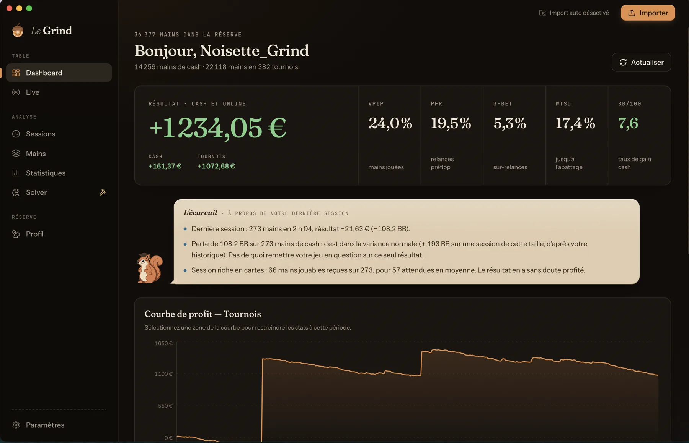

P.01
LE GRIND
Application desktop (Mac, Windows, Linux) qui analyse automatiquement les mains Winamax : statistiques détaillées, sessions, replayer de mains, courbes de gains, calculateur d'équité et solver préflop. Conçue et développée en solo — Electron, SQLite, IPC typé, mises à jour automatiques, télémétrie anonyme opt-in — et distribuée gratuitement.
ELECTRON · TYPESCRIPT · REACT · SQLITE · VITEST

DESKTOP APP